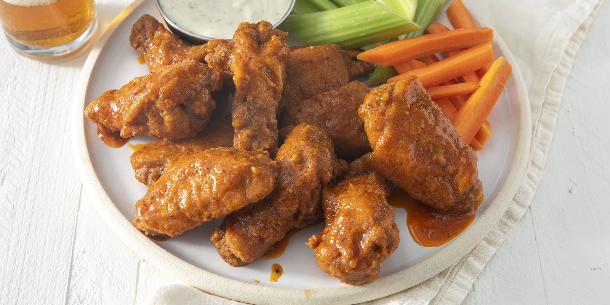

Return to Homepage
Chicken Adobo

Buffalo wings are delicious served with a side of ranch or blue cheese and cooling veggies (like celery or carrots). You can also serve hot wings as an appetizer for pizza or alongside mac and cheese (bonus points if you mix the hot wing sauce into the mac and cheese).
Ingredients:
- ½ cup all-purpose flour
- ¼ ground parpika
- ¼ teaspoon cayenne pepper
- ¼ teaspoon cayenne pepper
- 10 chicken wings
- 2 cups vegetable oil for frying, or as needed
- ¼ cup butter
- ¼ cup hot sauce
- 1 pinch ground black pepper
- 1 pinch ground black pepper
Steps:
- Whisk together flour, paprika, cayenne pepper, and salt in a small bowl.
- Place chicken wings in a single layer in a 9x13-inch glass baking dish. Sprinkle flour mixture over top and toss until wings are evenly coated. Cover and refrigerate for 1 to 1 1/2 hours.
- Add about 1 inch oil to a deep, heavy skillet; heat to 375 degrees F (190 degrees C). (The oil should be just enough to cover wings entirely.)
- While the oil is coming to temperature, combine butter, hot sauce, pepper, and garlic powder in a small saucepan over low heat. Cook and stir until butter is melted and mixture is thoroughly blended. Remove from the heat and reserve for serving.
- Fry coated wings in the hot oil for 10 to 15 minutes, or until they begin to crisp and turn brown. Maintain the oil temperature while cooking.
- Remove wings from the oil and place on a paper towel-lined plate.
- Transfer wings to a platter and drizzle hot sauce over top; or mix wings and hot sauce in a bowl until coated. Serve.
Scroll Up